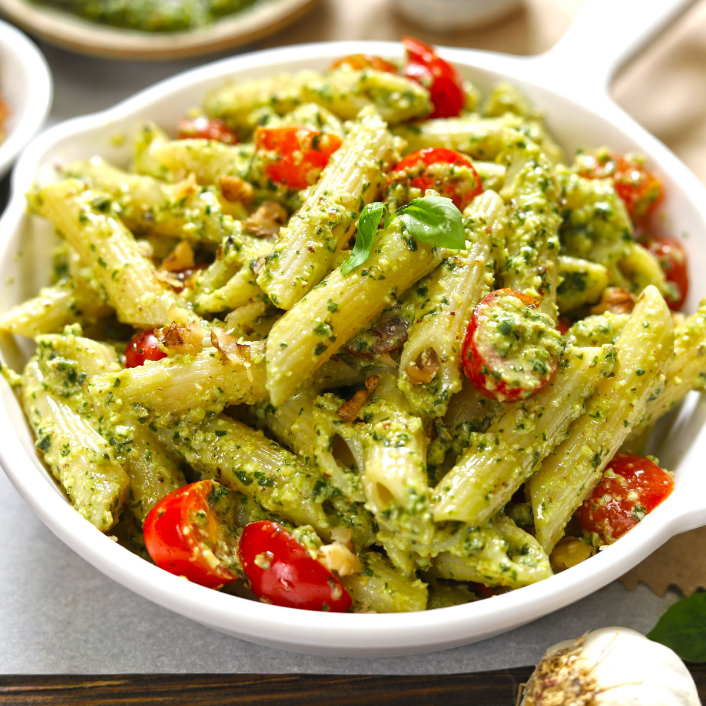

Basil Pesto

Description
A hearty and quick pasta dish that is both easy to make and easy to eat. It can be made simply by using store-bought pesto sauce or made more complex by using homemade pesto sauce!
It can be made easily in a oven in under an hour and results in a dish that is to die for
Ingredients
- 128gm pasta/day
- 1 pint of cherry tomatoes/week
- 2 1/4 cup of basil pesto/week
- salt
- 225gm chicken breast/day
Steps
- Preheat oven to 400F
- Bring a large pot of salted water to boil
- Cook pasta per instructions until al dente
- Drain
- Prep chicken by drying with paper towel, placing on oiled baking sheet and seasoning with salt and steak seasoning
- Cut tomatoes in half
- Use largest bowl to mix pasta, tomatoes, basil pesto and salt
- Prep aluminum foil boats on a baking sheet
- Place pasta mixture into foil boats
- Place pasta and chicken breast into oven
- Cook pasta for 12min then allow to cool for 10min
- Cook chicken breast for ~20min, or until 165F in center